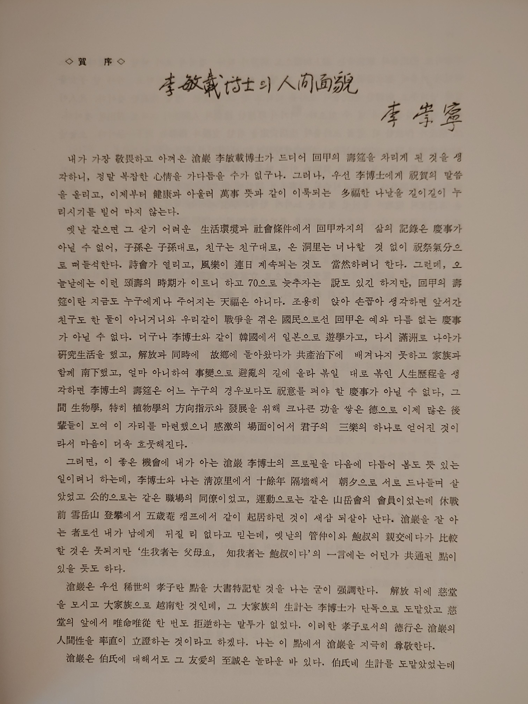
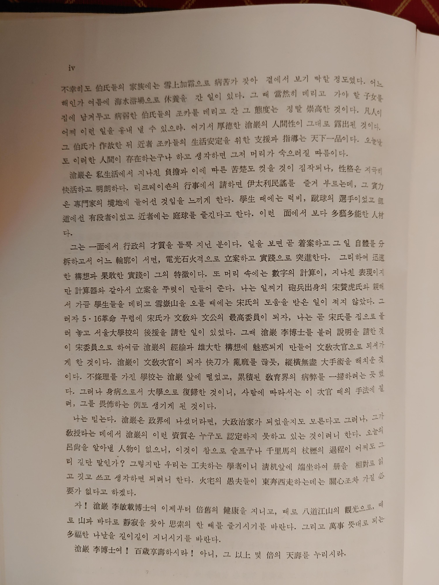
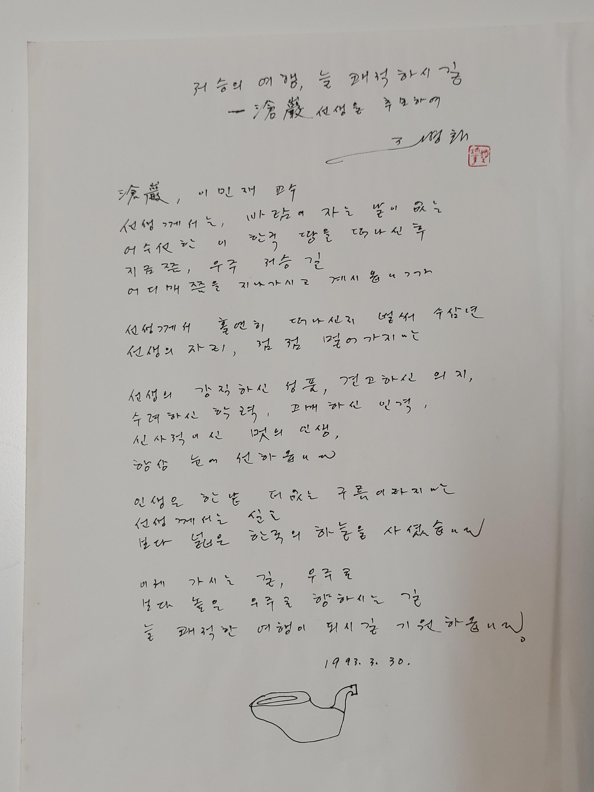
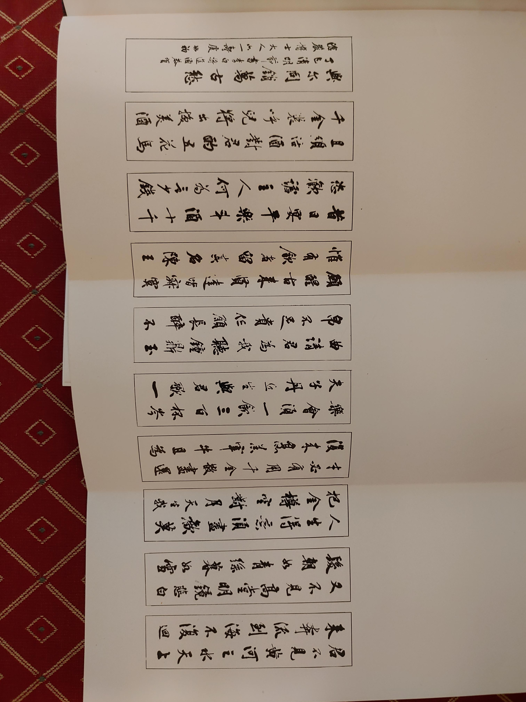
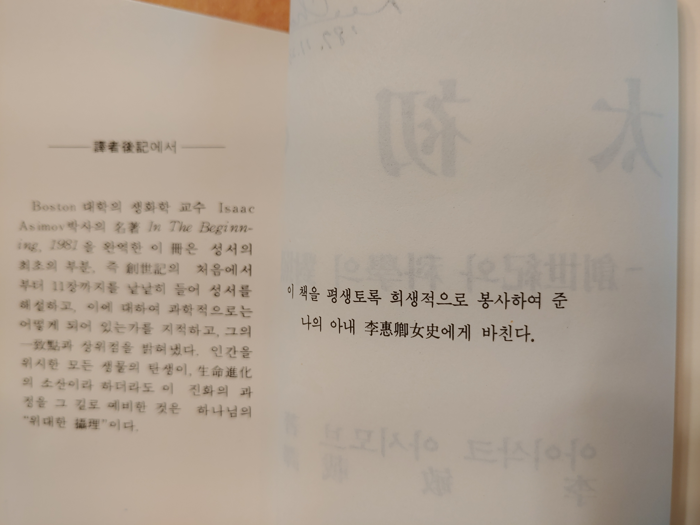
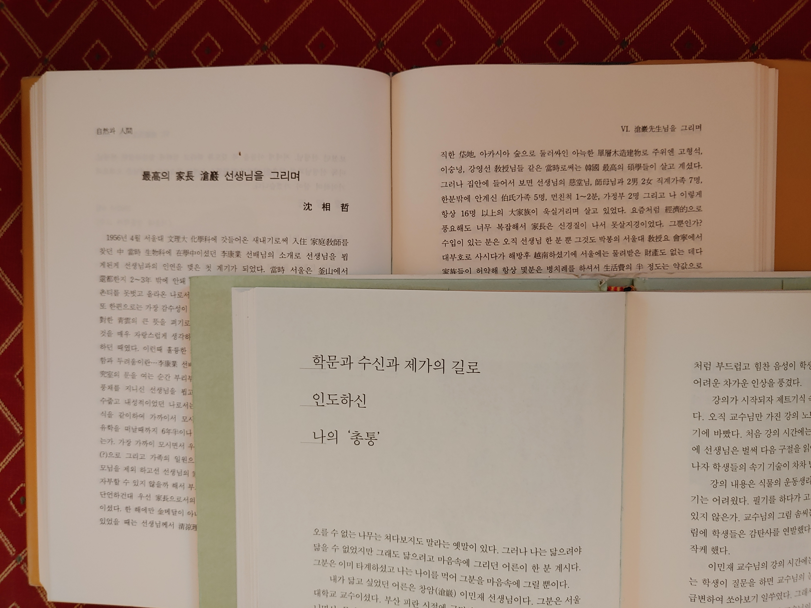
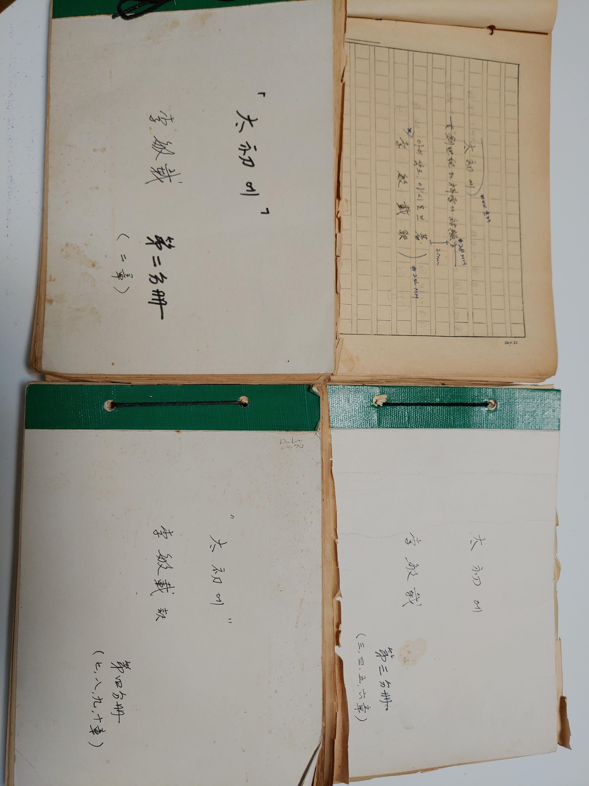
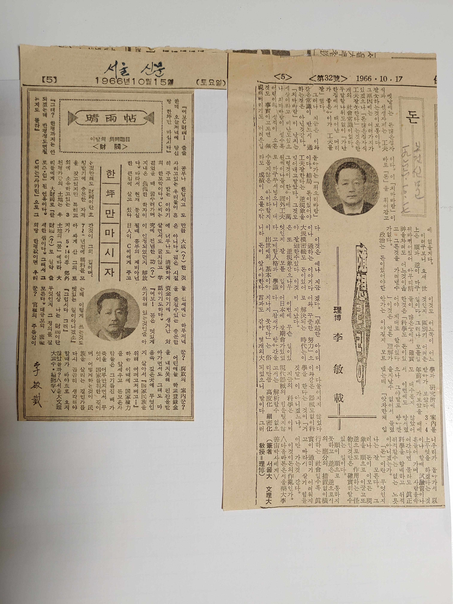
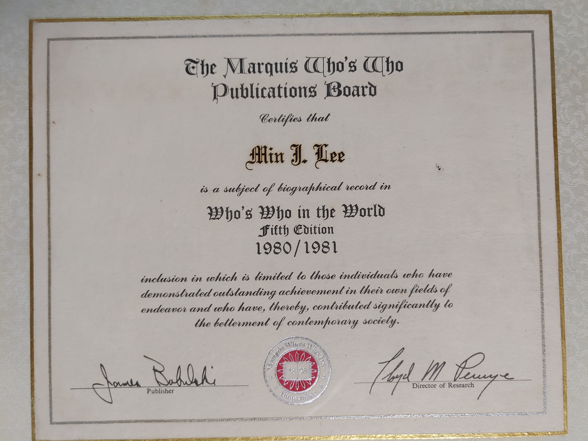

'자연과 인간'은 아버지 3주기를 기념하여 추모사업회에서 추모비 건립식을 하면서 아울러 출판한 책으로 친지들의 회상과 추모의 글과 그간 미출간되었던 아버지기고문을 모아 출판되였다. 이 책에는 아버지일대기와 자연관을 비롯한 혼이 담겨있다. 題字는 역시 여초 김응현. 균형미 넘치는 단아한 예서체로 써주셨다.
화갑기념논문집은 제자들이 편집하여 출판헌정하였는데 그 서두에는 문리대 물리학과 원로 권녕대교수와 존경받는 국문학자 이숭녕박사의 축하와 덕담이 담겨있는데 그중 이숭녕박사의 글을 아래에 옮긴다. 이숭녕명예교수와는 청량리문리대관사의 위아랫집에 사시면서 우리집의 내력을 가까이서 지켜보실수 있는 위치였다.



조병화시인의 추모글 ('자연과 인간' 수록)

화갑논문집의 서두에는 다시 여초 김응현이 아버지께 드린 명문이 수록되는데 10쪽병풍으로 쓴 이글의 내용은 이해하지 못하나 현재 강원대학교 박물관에 소장되어 있다.

아버지의 신심과 과학에대한 이성적 관념이 결합하여 탄생한 역서 '태초에'는 구약 창세기를 과학자의 시각으로 바라본다. 역자후기에서 언급하시듯 신앙과 과학, 창조와 진화, 그리고 하나님의 위대한 섭리를 설파하신다. 이책의 첫장에는 어머니에대한 감사의 글이 써있다. 어머니의 희생과 봉사는 이후에도 병상의 아버지께 헌신하시는 모습으로 한층 더해진다.

자연과 인간에 수록된 글중에서 심상철 카이스트교수(총장)의 '최고의 가장' 과 서울대에서 출판한 '영원한 나의등불'에서 제자 김준호교수가 쓴 '학문과 수신과 제가의 길' 기고문의 첫장. 그 내용은 나의 회상을 불러일으켜 감상에 젖어들도록 절절하다

'태초에' 친필원고

아버지께서는 다방면의 문헌기록에 다양한 저술 또는 기고문을 납기셨는데 그중 대다수는 창암문집과 자연과 인간에 수록되어 있다. 위의 서울신문과 보건신문의 기사는 우연히 오래된 스크랩북에서 발견하였는데 출판문집에서 빠져있는듯 하다. 1966년이면 55년전인데 재물이나 교육에 관한 관점에서 요즘과 상당히 유사했음을 볼수 있다.

Who's Who 에 보면 아버지 공적을 비롯하여 자녀들 이름이 모두 올라있다. 자랑스러워 하셨다.